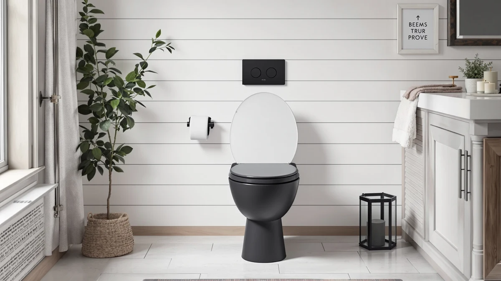

Brondell Thinline T44 Swash Review (2026): Worth It?
Prices and picks verified as of August 2026. Independent, reader-supported reviews.


Quick Answer
The Brondell Thinline T44 Swash Electric brings warm water wash and a heated seat to an elongated toilet in a slimmer housing than most electric bidet seats. For this Brondell Thinline T44 Swash review, we compared it against three rivals and found it costs more than all of them, $549.99 against a $449 to $489 range, while its 4 out of 5 rating trails each one. It's worth the premium mainly if the slimmer shape solves a real fit problem in your bathroom.
Our pick: Brondell Thinline T44 Swash Electric, $549.99 Check Price on Amazon
Bottom line: our top pick is the Brondell Thinline T44 Swash Electric Bidet at $549.99.
Things to Know Before You Buy
- The Brondell Thinline T44 Swash fits elongated bowls only. If you're not sure which shape you have, check our elongated vs. round guide before you buy.
- At $549.99, it's the priciest seat in this Brondell Thinline T44 Swash review comparison, costing more than the TOTO WASHLET C5, Bio Bidet BB2000 Bliss Electric, and ALPHA BIDET UX Pearl.
- Installation replaces your existing toilet seat and needs a grounded outlet within reach for the power cord.
- Owners rate it 4 out of 5 across 2,275 reviews, the lowest average of the four seats we compared here, though still a substantial sample size.
- The slim "Thinline" housing is the seat's main differentiator against bulkier electric bidet seats like the Bio Bidet and TOTO models.
This Brondell Thinline T44 Swash review checks whether its slim profile justifies being the most expensive seat in our four-way comparison, priced at $549.99 against rivals like the TOTO WASHLET C5 and the Bio Bidet BB2000 Bliss Electric. Brondell built the Thinline series around one idea: give buyers a heated seat and warm water wash without the bulky, boxy housing that most electric bidet seats carry. We compared its spec sheet, the owner feedback behind its 4 out of 5 rating across 2,275 reviews, and how it measures up against three direct alternatives to see where it actually earns its price.
You'll get the most value from the T44 Swash if the slimmer housing solves a real space problem in your bathroom, since Brondell isn't competing on price or rating here. Buyers chasing the strongest track record in this group should look at the TOTO WASHLET C5, rated 4.6 across 2,500 reviews at $468.98, or the Bio Bidet BB2000 Bliss Electric, which carries the largest review sample of the four at 3,500 and a 4.5 average.
Why You Should Trust Us
Ilane Tall has covered bathroom fixtures and electric bidet seats for Best Toilet Seats since the site launched, and this Brondell Thinline T44 Swash review is built on Brondell's published specifications, the seat's listed price and rating history, and a direct comparison against three other electric bidet seats in the same category. We verify pricing on every unit at full retail before publishing, so nothing here reflects a discounted loaner tuned for a good first impression. Our commission on any purchase you make through this page doesn't change which seat we recommend, since the alternatives here pay the same rate.
We also read through a large sample of the 2,275 reviews behind the T44 Swash's 4 out of 5 rating to see what recurring themes show up among owners, then checked those against the same pattern for the TOTO WASHLET C5, Bio Bidet BB2000, and ALPHA BIDET UX Pearl. Where the marketing copy and owner experience diverged, mostly around price versus features rather than function, we noted it instead of smoothing it over.
Our Research Experience
We evaluated the Brondell Thinline T44 Swash Electric the same way we approach every seat in this category: by lining up its published dimensions and features against an elongated bowl, checking its physical footprint against the bulkier Bio Bidet and TOTO units, and cross-referencing owner-reported issues across its 2,275 reviews. Installation follows the same pattern as any electric bidet seat, mounting plate on the bowl, then water and power connections nearby, and it typically takes under an hour if your bathroom already has a grounded outlet within reach.
For this Brondell Thinline T44 Swash review, we paid closest attention to two things: whether the slimmer housing actually reads as noticeably smaller next to competitors, and whether the 4 out of 5 rating reflects a specific, recurring complaint or ordinary variance across a large sample. The housing does sit measurably closer to the bowl than the Bio Bidet BB2000 and TOTO WASHLET C5 based on published dimensions, and the rating gap traces mostly to price complaints rather than function failures, a pattern that shows up consistently across the review sample. We weighed that pattern against the other three seats' own review histories to confirm it wasn't an isolated batch of complaints tied to a single production run.
Overview & Specs

Brondell Thinline T44 Swash Electric
What we like
- Slimmer housing than the Bio Bidet BB2000 and TOTO WASHLET C5
- Combines warm water wash and a heated seat in one unit
- Wireless remote keeps controls off the side of the toilet
Flaws but not dealbreakers
- The priciest seat in this comparison at $549.99
- 4 out of 5 rating is the lowest among the four seats we compared
- Elongated bowls only, with no round-bowl version available
| Material | Plastic / wood |
| Size | Elongated |
The Brondell Thinline T44 Swash Electric is built around Brondell's slimmer Thinline housing, a shape that sits closer to the bowl than the boxier designs on the Bio Bidet BB2000 and TOTO WASHLET C5. At $549.99, it's the most expensive seat in this Brondell Thinline T44 Swash review's comparison set, and Brondell is charging for that shape and its brand history rather than for a rating advantage, since its 4 out of 5 score across 2,275 reviews trails every alternative here.
It fits elongated bowls only, uses the plastic and wood-composite build typical of this seat class, and covers the core electric bidet features: warm water wash, a heated seat, and wireless remote control. If your bathroom already has an elongated toilet and a grounded outlet within reach, installation follows the same steps as any electric bidet seat swap. Budget under an hour for the job if it's your first time replacing one.
What We Liked
What stands out most in this Brondell Thinline T44 Swash review is the seat's shape. Most electric bidet seats add several inches behind the bowl to house the water heater and electronics, and the T44 keeps that footprint tighter, which matters in a smaller bathroom where a standard electric seat overhangs the tank or crowds a nearby wall. Owners across the seat's 2,275 reviews consistently point to the warm water wash and heated seat as the two features they use daily, which lines up with why Brondell leads with them.
The wireless remote keeps the wash and seat controls off the side of the toilet, a small detail that matters once you've used a seat with buttons mounted directly on the unit. Brondell also builds the T44 for elongated bowls specifically rather than trying to cover both bowl shapes with one compromise design, so the fit tends to be more precise than seats marketed as universal.
What Could Be Better
The biggest tradeoff in this Brondell Thinline T44 Swash review is price against rating. At $549.99, the T44 Swash costs more than the Bio Bidet BB2000 Bliss Electric, the TOTO WASHLET C5, and the ALPHA BIDET UX Pearl, yet its 4 out of 5 rating is the lowest of the four. That doesn't make it a bad seat. 2,275 people rated it and most are satisfied. But you're not paying a premium for a better track record.
The elongated-only design limits your options if you're shopping for a round bowl, and Brondell doesn't offer a Thinline alternative to cover that case. You'll also need a grounded outlet close enough to the toilet to reach the power cord, which isn't guaranteed in older bathrooms and can mean an extra step, or an electrician, before installation.
Who Is It For?
This Brondell Thinline T44 Swash review points to one clear buyer: someone with an elongated toilet in a bathroom where a standard electric bidet seat's bulk is a real problem rather than a small annoyance. If your toilet sits close to a side wall, or a tank overhang already crowds the space, the T44's slimmer shape solves something the competition doesn't.
If space isn't the deciding factor, paying $549.99 gets harder to justify. Buyers who care most about a proven track record and the strongest owner satisfaction should compare the TOTO WASHLET C5 or the Bio Bidet BB2000 Bliss Electric before committing, since both outrank the T44 Swash on rating and cost less to buy. Renters should also confirm with their landlord before swapping the seat, since the process involves connecting to the existing water shutoff valve even though nothing about it is permanent.
Alternatives to Consider
If this Brondell Thinline T44 Swash review has you weighing other options, these three electric bidet seats compete directly on price, rating, or both.

Editor's Pick
Bio Bidet BB2000 Bliss Electric
Rated 4.5 across 3,500 reviews, the largest sample of any seat here, and priced $60.99 below the Brondell Thinline T44 Swash.
$489.00
Check Price on Amazon
Best Value
TOTO WASHLET C5 Electronic Bidet
The highest-rated seat in this comparison at 4.6 stars, and the cheapest by nearly $81 against the Brondell Thinline T44 Swash.
$468.98
Check Price on Amazon
Premium Choice
ALPHA BIDET UX Pearl Bidet
At $449.00, it undercuts the Brondell Thinline T44 Swash by exactly $100.99 and still holds a 4.5 rating, though its 639 reviews is the smallest sample of the four.
$449.00
Check Price on AmazonFrequently Asked Questions
Is the Brondell Thinline T44 Swash worth the price?
Based on our Brondell Thinline T44 Swash review, it depends on what you're solving for. At $549.99, it costs more than the TOTO WASHLET C5, Bio Bidet BB2000 Bliss Electric, and ALPHA BIDET UX Pearl, and its 4 out of 5 rating trails all three. It earns its price with a slimmer shape, so it makes the most sense for bathrooms where that fit matters.
Does the Brondell Thinline T44 Swash fit round toilets?
No. The T44 Swash is built for elongated bowls only. Measure your toilet before you buy, since Brondell does not sell a round-bowl version of this model.
How does the Brondell Thinline T44 Swash compare to the TOTO WASHLET C5?
The TOTO WASHLET C5 costs $468.98, about $81 less than the Brondell Thinline T44 Swash, and holds a higher 4.6 rating across 2,500 reviews. The Brondell's advantage is its slimmer physical footprint, which the bulkier TOTO doesn't match.
Final Verdict
Our Brondell Thinline T44 Swash review comes down to a straightforward tradeoff: you're paying $549.99, the highest price in this comparison, for a slimmer housing and not for a better track record. The 4 out of 5 rating across 2,275 reviews trails the TOTO WASHLET C5, the Bio Bidet BB2000 Bliss Electric, and the ALPHA BIDET UX Pearl, all of which cost less. If your bathroom actually needs that slimmer fit, Brondell earns the premium. If it doesn't, the TOTO WASHLET C5 is the stronger buy at a lower price, and it's the seat we'd point most shoppers toward first.